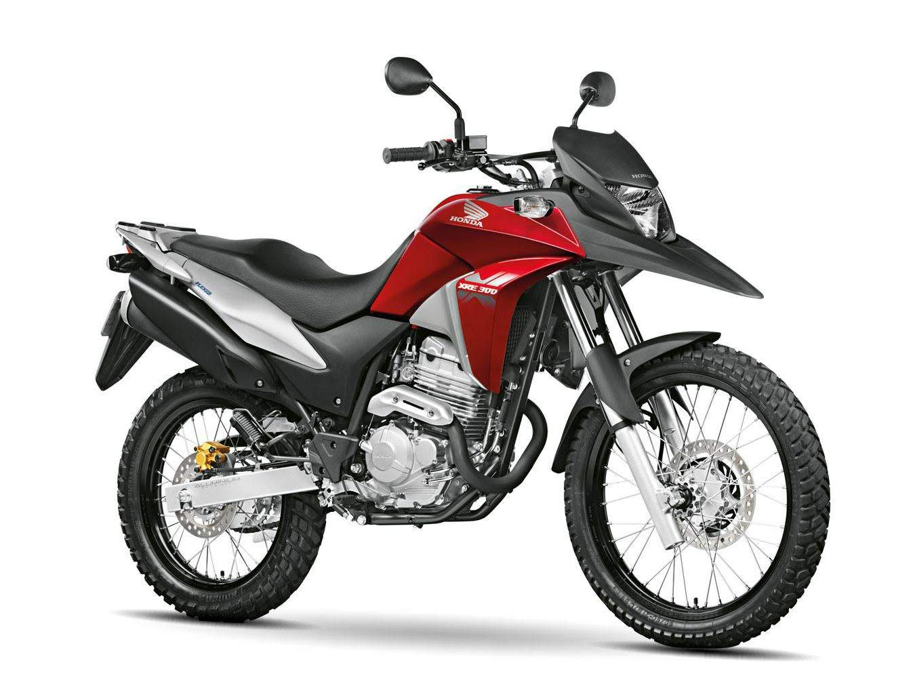

Honda XRE 300 Vale a Pena em 2026?

Introdução à Honda XRE 300
A Honda XRE 300 é uma moto trail adventure que se popularizou no Brasil por sua robustez e versatilidade. Em 2026, com atualizações como freios ABS duplo e painel digital, muitos se perguntam: Honda XRE 300 vale a pena? Sim, para uso misto (urbano, estrada e off-road leve), ela oferece equilíbrio entre potência, durabilidade e conforto. Lançada como evolução da XRE 190, compete com Yamaha Lander 250 e Kawasaki Versys-X 300, destacando-se pelo motor de 291,6 cc com injeção eletrônica PGM-FI.
Entrega 25,4 cv de potência e torque de 2,76 kgfm, ideal para viagens curtas e trilhas, com transmissão de 5 marchas e partida elétrica.
Preço da Honda XRE 300 em 2026
O preço sugerido da Honda XRE 300 ABS 2026 é R$ 25.000 (sem frete), variando para R$ 25.500 com impostos em diferentes regiões. A versão Rally custa R$ 26.000 com gráficos exclusivos. Comparada a usadas (R$ 20.000-23.000), a nova vale pela garantia de 3 anos e features como protetor de motor. Para aventureiros, Honda XRE 300 vale a pena 2026 pelo custo-benefício, com depreciação moderada (~12% anual) graças à revenda forte.
Inclui rodas raiadas de 21" dianteira e 18" traseira, tanque de 13,8 litros e peso de 148 kg, facilitando manobras em terrenos irregulares.
Consumo e Desempenho no Dia a Dia
O consumo médio é de 25-30 km/l na cidade, alcançando 35 km/l em estradas, graças ao motor flex e eficiência. Isso faz Honda XRE 300 vale a pena para economia, com autonomia de ~450 km. Velocidade máxima ~130 km/h, com aceleração de 0-100 km/h em ~9s para ultrapassagens. A suspensão (longo curso, 245 mm dianteira) absorve impactos em buracos e terra, enquanto a altura do solo de 259 mm permite off-road. Para garupa, o banco bipartido e bagageiro oferecem conforto em viagens médias.
Em uso misto, ela é versátil para commuting ou lazer, com freios ABS evitando travamentos em chuva.
Manutenção e Custos Anuais da XRE 300
A manutenção é razoável: revisões a cada 4.000 km custam R$ 300-500 em autorizadas. Custos anuais (peças, óleo, pneus) ficam entre R$ 1.200-1.800 para 10.000 km. Peças como filtro de óleo (R$ 50) e corrente (R$ 200) são acessíveis, com rede ampla da Honda. Sem falhas crônicas, a durabilidade excede 100.000 km. Para usuários off-road, Honda XRE 300 vale a pena 2026 pelo custo, incluindo seguro ~R$ 900/ano.
- Prós: Versatilidade trail, ABS, durabilidade, conforto em irregularidades.
- Contras: Consumo médio para cc, peso em manobras urbanas, sem USB nativo.
Comparação com Concorrentes em 2026
Vs. Yamaha Lander 250 (R$ 23.000): A XRE vence em potência e suspensão. Vs. Kawasaki Versys-X 300 (R$ 28.000): A Honda é mais acessível e com melhor rede. Para uso diário misto, a XRE se destaca pela robustez. Teste uma para sentir o motor DOHC refrigerado a ar.
Conclusão: Honda XRE 300 Vale a Pena?
Sim, a Honda XRE 300 vale a pena em 2026 para quem precisa de moto versátil, com bom desempenho e durabilidade. Ideal para aventuras leves e uso urbano. Consulte concessionárias para promoções. (Baseado em análises 2026; valores aproximados.)
Outras Notícias
10 motos boas para estrada em 2026
Vale a pena comprar a Bajaj Dominar 250?